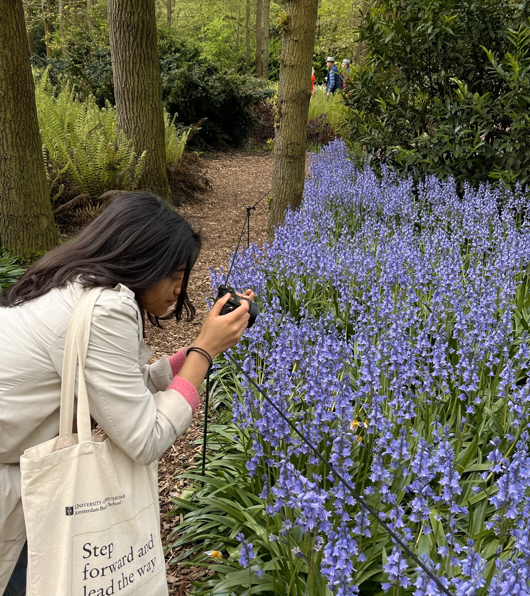

About
I’m a photographer drawn to everyday spaces, natural light, and quiet moments. My work focuses on the relationship between people, place, and atmosphere.
Most of my photography is created at home or while exploring nature and cities, capturing moments that feel honest and calm.
